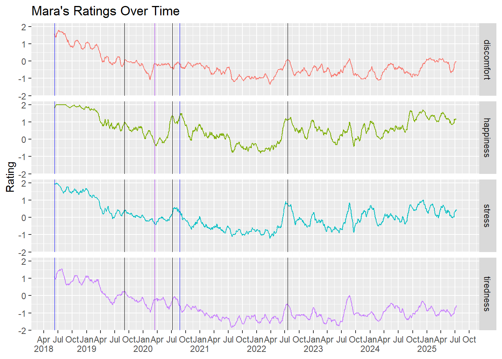

In May 2018, I started tracking on a daily basis four variables once per day: discomfort, happiness, stress, and tiredness. I typically do the rating before bed as I journal.
I rate my status on these variables on a minus two to plus two scale. All variables have the same direction of ‘goodness’. For example, plus two on the tiredness scale means I feel completely rested and have more than enough energy to do everything I wanted in a day, whereas minus two means I feel like I don’t have enough energy to do the minimum amount of things needed to scrap by in a day. Plus two on the discomfort scale means my body feels amazing and I have no discomfort.
I have plotted the 28 day rolling mean of the value ratings below.
As I write this blog, I am fairly shocked by a few parts of the plot. First, I do not remember feeling so happy or rested as the plot seems to indicate after the birth of my first child (June 2018). Also it seems a two week break in July 2022 from work outside the home had huge effect on all four variables for a fair amount of time afterwards. I plan to investigate what happened in Spring 2019 that was temporally related to a significant downward shift of all ratings. Without referring back to my journal, I recall that Spring being highly influenced by trying to re-enter the workforce.
Some notable events are denoted with vertical lines on the plot:
June 2018: birth of first child
Sept 2019: return to work
March 2020: living apart from husband and son during pandemic for approximately 100 days
July 2020: start of fellowship
August 2020: birth of second child
July 2022: start of new job
I think the most exciting part of finally seeing this data is now planning to try a few different interventions on myself for 4 week periods to see if I can see meaningful changes to my rolling mean in any of the four areas.
An aspect not well captured in these plots is my sense of meaning. I have a tremendous sense of meaning in my life since having children. While that might seem like an improvement, I want even more! The kicks just keep getting harder to get, and now I crave more meaning in my life: more engagement with friends, family, my local community. It’s as if my children unlocked a new level of connection to the world and expanded my capacity to care about things I hadn’t even noticed in my life before.

Combining it all
I think the combination of discomfort, happiness, stress, and tiredness are some of the biggest indicators of what my overall mood would probably be. When I look at the four measures summed up, I see following trends. I remain impressed that the year after my first child was born, I was rating myself so highly in all four areas.
Source Code
---title: Mom's Mood Meterauthor: 'Mara Alexeev'date: 2023-07-22date-modified: '`r Sys.Date()`'categories: [R,Family Life]description: Plotting my mood over 5+ yearsslug: mom-s-mood-meterimage: 'image_for_blog_post.jpg'archives: - function () ,.Internal(date())toc: falseformat: html: code-fold: true code-tools: trueexecute: echo: false warning: false error: false---```{r}library(googlesheets4)library(tidyverse)library(zoo)data_mood <-read_sheet(ss='https://docs.google.com/spreadsheets/d/1rQhDJreU-S-P8xxO2L6w9IP3N---E1NxSYa3jPib2gU/edit#gid=1501523757', sheet ='Form Responses 1')data_mood <- data_mood |> janitor::clean_names()``````{r}data_mood_subset <- data_mood |>select(timestamp, tiredness, stress, happiness, how_do_i_physically_feel) |>rename(discomfort = how_do_i_physically_feel) data_mood_subset <- data_mood_subset |>pivot_longer(!timestamp, names_to ='measurement_type', values_to ='value') data_mood_subset$timestamp <- lubridate::as_datetime(data_mood_subset$timestamp)data_mood_subset <- data_mood_subset |>drop_na(value) |>mutate( value_norm =case_when( value ==0~-2, value ==1~-1, value ==2~0, value ==3~1, value ==4~2 )) |>group_by(measurement_type) |>mutate(mean_rolling = zoo::rollmean( value_norm, 28, na.pad =TRUE)) |>ungroup()``````{r}plot_base <- data_mood_subset |>ggplot(aes(x =as_date(timestamp), y = mean_rolling, color = measurement_type)) +geom_line() +scale_x_date(NULL,breaks = scales::breaks_width("3 months"), labels = scales::label_date_short() ) +facet_grid(rows =vars(measurement_type)) +labs(x ="Date", y ="Rating", title ="Mara's Ratings Over Time") +geom_vline(xintercept = lubridate::as_date('2018-06-09'),color ="blue",linewidth =0.25 ) +geom_vline(xintercept = lubridate::as_date('2020-08-24'),color ="blue",linewidth =0.25 ) +geom_vline(xintercept = lubridate::as_date('2020-03-15'),color ="purple",linewidth =0.25 ) +geom_vline(xintercept = lubridate::as_date('2019-09-02'),color ="black",linewidth =0.25 ) +geom_vline(xintercept = lubridate::as_date('2020-07-06'),color ="black",linewidth =0.25 ) +geom_vline(xintercept = lubridate::as_date('2022-07-18'),color ="black",linewidth =0.25 ) ```# Tracking happiness, stress, and tirednessIn May 2018, I started tracking on a daily basis four variables once per day: discomfort, happiness, stress, and tiredness. I typically do the rating before bed as I journal.I rate my status on these variables on a minus two to plus two scale. All variables have the same direction of 'goodness'. For example, plus two on the tiredness scale means I feel completely rested and have more than enough energy to do everything I wanted in a day, whereas minus two means I feel like I don't have enough energy to do the minimum amount of things needed to scrap by in a day. Plus two on the discomfort scale means my body feels amazing and I have no discomfort.I have plotted the 28 day rolling mean of the value ratings below.As I write this blog, I am fairly shocked by a few parts of the plot. First, I do not remember feeling so happy or rested as the plot seems to indicate after the birth of my first child (June 2018). Also it seems a two week break in July 2022 from work outside the home had huge effect on all four variables for a fair amount of time afterwards. I plan to investigate what happened in Spring 2019 that was temporally related to a significant downward shift of all ratings. Without referring back to my journal, I recall that Spring being highly influenced by trying to re-enter the workforce.Some notable events are denoted with vertical lines on the plot:- June 2018: birth of first child- Sept 2019: return to work- March 2020: living apart from husband and son during pandemic for approximately 100 days- July 2020: start of fellowship- August 2020: birth of second child- July 2022: start of new jobI think the most exciting part of finally seeing this data is now planning to try a few different interventions on myself for 4 week periods to see if I can see meaningful changes to my rolling mean in any of the four areas.An aspect not well captured in these plots is my sense of meaning. I have a tremendous sense of meaning in my life since having children. While that might seem like an improvement, I want even more! The kicks just keep getting harder to get, and now I crave more meaning in my life: more engagement with friends, family, my local community. It's as if my children unlocked a new level of connection to the world and expanded my capacity to care about things I hadn't even noticed in my life before. ```{r}#plot_interactive <- plot |> plotly::ggplotly()plot_base +theme(legend.position ="none")``````{r}data_combined <- data_mood |>select(timestamp, tiredness, stress, happiness, how_do_i_physically_feel) |>rename(discomfort = how_do_i_physically_feel) |>drop_na()data_combined <- data_combined |>pivot_longer(!timestamp, names_to ='measurement_type', values_to ='value') data_combined$timestamp <- lubridate::as_datetime(data_combined$timestamp)data_combined <- data_combined |>mutate( value_norm =case_when( value ==0~-2, value ==1~-1, value ==2~0, value ==3~1, value ==4~2 )) |>select(timestamp, measurement_type, value_norm)|>group_by(timestamp) |>mutate(sum_ratings =sum(value_norm)) |>ungroup()|>select(timestamp, sum_ratings) |>distinct() |>mutate(rolling_mean_combined = zoo::rollmean(sum_ratings, 28, na.pad =TRUE)) |>drop_na()```# Combining it allI think the combination of discomfort, happiness, stress, and tiredness are some of the biggest indicators of what my overall mood would probably be. When I look at the four measures summed up, I see following trends. I remain impressed that the year after my first child was born, I was rating myself so highly in all four areas.```{r}plot_sum <-ggplot(data_combined, aes(x =as_date(timestamp), y = rolling_mean_combined)) +geom_line(color ='orange') +theme_minimal() +scale_x_date(NULL,breaks = scales::breaks_width("3 months"), labels = scales::label_date_short() ) +labs(x ="Date", y ="Rating", title ="Mara's Mood (Combined Ratings) Over Time") +geom_vline(xintercept = lubridate::as_date('2018-06-09'),color ="blue",linewidth =0.25 ) +geom_vline(xintercept = lubridate::as_date('2020-08-24'),color ="blue",linewidth =0.25 ) +geom_vline(xintercept = lubridate::as_date('2020-03-15'),color ="purple",linewidth =0.25 ) +geom_vline(xintercept = lubridate::as_date('2019-09-02'),color ="black",linewidth =0.25 ) +geom_vline(xintercept = lubridate::as_date('2020-07-06'),color ="black",linewidth =0.25 ) +geom_vline(xintercept = lubridate::as_date('2022-07-18'),color ="black",linewidth =0.25 ) +ylim(-8,8) +annotate(geom ="text",label =c('Baby 1', 'Baby 2', 'Fellowship', 'Pandemic', 'New Job', 'New Job'),x =c(as_date('2018-06-09'),as_date('2020-08-24'),as_date('2020-07-06'),as_date('2020-03-15'),as_date('2022-07-18'),as_date('2019-09-01') ),y =c(-5.5),angle =90,vjust =1 ) plot_sum```